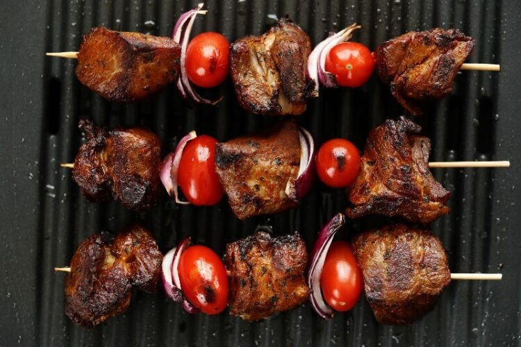

Shashlik

Shashlik is a suitable picnic food. This shish kebab is very popular in Russia and central Asia, but it is originally from the Caucasus. Cooking Shashlik has straightforward steps. Cutting, marinading, and grilling. There are many ways of marinading, and it is different in each country. For example, there is a similar kebab in Iran called Kebab Torsh. They use pomegranate molasses and walnuts for marinating.
Ingredients
- onion
- bay leaf
- salt
- black pepper
Steps to cook
- Chop 1.5 kg of meat (boneless parts, shoulder or leg preferred) into small cubes (2 inches).
- Slice 3 onions into string pieces. Add the meat and onion pieces into a bowl.
- Pour three tablespoons of vegetable oil on them with one teaspoon of salt and one teaspoon of black pepper.
- Put two bay leaves on the mixture to exclude bad smells from the meat.